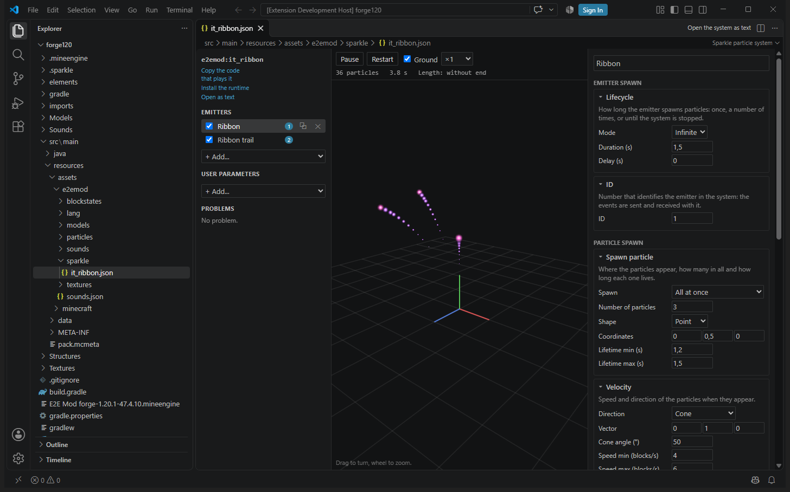

Systèmes de particules pour les mods Minecraft : Forge, NeoForge et Fabric.
Extension VS Code · GitHub · Changelog
Sparkle est un éditeur visuel de systèmes de particules, avec des modèles et un aperçu 3D. Un petit runtime Java les joue ensuite en jeu, le même pour les trois loaders.

assets/<namespace>/sparkle/*.json : émetteurs, modules,
aperçu 3D animé. Ctrl+Z, l'enregistrement et Git fonctionnent comme pour n'importe quel fichier.Côté serveur :
Sparkle.play(level, "fire", x, y, z); // "<mod id>:fire"
Sparkle.playOn(entity, "aura"); // suit l'entité
Sparkle.stopOn(entity);
Sparkle.play(level, "beam", x, y, z, SparkleParameters.create()
.vector("end", 0, 1, 8)
.color("tint", 0xFF8800));Rien à écrire côté client, et les joueurs n'installent rien. Le système est relu après F3+T : on peut le modifier dans VS Code et le revoir en jeu sans relancer Minecraft.
| Loader | Testé (compilé) | Accepté avec un avertissement | Refusé |
|---|---|---|---|
| Forge | 1.20.1, 1.21.1 à 26.3 | les autres 1.20.x, 1.21, après 26.3 | avant 1.20 |
| NeoForge | 1.20.6, 1.21.1 à 26.3 | 1.20.1, 1.20.5, 1.21, après 26.3 | 1.20.2 à 1.20.4, avant 1.20 |
| Fabric | 1.20.1, 1.20.4, 1.21.1 à 26.3 | les autres 1.20.x, 1.21, après 26.3 | mappings Yarn, avant 1.20 |
« Testé » : le runtime compile dans un vrai projet de chaque loader, pour chaque version de Minecraft de la plage. Il n'a pas encore été essayé dans un vrai client Minecraft.
IntelliJ IDEA : version 0.2.0, avec le même éditeur et le même runtime. Blockbench et MCreator : à venir.
Chargement…